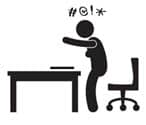

Çalışsam mı, çalışmasam mı?
Hamile olduğunu bir arkadaşına söyledin… Çok sevindi. Sanki bir şey bulabilecekmiş gibi saçma sapan bir davranışla karnına bile dokundu. Cinsiyetini sordu. Söyledin. İsmini ne koyacaksınız diye sordu. Henüz karar vermedik diyeceksin -ki muhtemelen son güne kadar karar veremeyeceksin- bir sonraki soru şu olacak: Eeee işi bırakacaksın herhalde. Bak, bırakacak mısın değil, bırakacaksın herhalde. Sen ne dersen de, göbeğini gören toplum işi bırakmanı bekler. Doğum izni alabilen devlet memurları! Hadi siz bu sayfaları hızlı hızlı bir geçin. Bana patronuna hamile olduğunu nasıl söyleyeceğini bilemeyen özel sektör çalışanları, döndüğünde bir işinin bile olup olmayacağının garantisini göremeyen meslek sahipleri gelsin.
Eğer sen çalışmadan da ailenizin giderlerinin karşılanabildiği bir düzeniniz varsa elbette ki bebeğe sen bak. Ama gözünü seveyim şunlara dikkat et:
- Geceliğini yataktan çıktığın anda çıkart ve doğru düzgün giyin. İşe gidiyormuş gibi olmasa da dışarı çıkıyormuş gibi, öyle olmasa da en azından eve biri gelecekmiş gibi. Seni öğlen saat üçte dizleri çıkmış pijamalar ve kusmuk kokusu ile görürsem gerçekten üzülürüm.
- Hamilelik ve lohusalık hormonları yüzünden çıldırmış kaşlarını ve bıyıklarını düzenli olarak aldır, aynen işe giderken yaptığımız gibi.
- Saçlarını tara, işe giderken yaptığın gibi. Hadi canım kim işe giderken atkuyruğu yapar ki?
Uzatmayayım, izlenimlerimi söylüyorum. Tempolu bir iş hayatından çıkıp, kendini bir ya da iki çocukla aynı evde bulan kadın eninde sonunda bu miskin hayatın pençesine düşer. Ben düşmem diyene saygı duyarım. Fakat en kötü tecrübemi paylaşacağım. Okuduktan sonra ne hissedersin bilmiyorum ama düşüncelerimi en güzel anlatan örnek bu, yazmasam çatlarım: Benim henüz çocuğum yokken, bir arkadaşım doğum yaptı.Diş hekimiydi ve hamileliği sırasında işi bıraktı, ihtiyaçları yoktu ve evet çalışmayacaktı. Doğumdan birkaç ay sonra ziyaretine gittim. Yanımda bebeğini emzirdi, göğsüne bir tel saç düşmüş ve bebeğin ağzına girmek üzere. Duuurr dedim, saç var göğsünde. Bana ölü bir balığın gözleriyle baktı ve “Yoook o benim göğüs kılım” dedi.(Yüzünü tahmin edebiliyorum sevgili okuyucu, affet beni.)
İşte o gün dedim ki, yazık arkadaş, çocuk sahibi olacağım diye insan kendine bunu yapamaz.
 Ben ne yaptım?
Ben ne yaptım?
Ne yapıcam çalıştım. İkizlerin doğumundan 20 gün sonra, Name’nin doğumundan 10 gün sonra işe başladım.
Çalışan anne olmanın zorluklarını sıralayacaktım ama 3000 maddeyi kim okumak ister ki? Avantajlarını yazayım belki daha çok ilgini çeker.
- Aldığın kiloların hepsini olmasa da büyük bir kısmını günlük koşuşturmacanın içinde verirsin. Olmadı mı, elbisenin içine korse giyer, gizlersin. Bıngıldayan bir göbeğinin olduğunu çok rahat saklarsın.
- Her gün ister istemez şık giyinir, kendini daha güzel ve daha iyi hissedersin. (Marangoz, musluk tamircisi falan değilsen tabii.)
- Makyajını yapar, saçını tarar ve evden çıkarsın.
- Çocuğunun fotoğrafını çerçeveletip masana koyar ve arada bakıp da gülümseyen insanlar zümresine dahil olursun.
- Hayattan kopmaz, iş arkadaşların ne bileyim dizilerden, filmlerden, kitaplardan, haberlerden bahsederken sen de onlara katılır, bir süreliğine çocuğunun nasıl da tatlı olduğunu, ne şirinlikler yaptığını anlatmaya ara verirsin.
- Ve çocuğunu çok özlersin. Akşam eve gittiğinde de sımsıkı sarılır, birlikte nitelikli birkaç saat geçirirsin.
Hepsi bir yana kendini işe yarar hissedersin. Eninde sonunda bu çocuk büyüyecek ve okula başlayacak. Ve bu, kreşe vermediğinizi düşünürsek en fazla 6 yıl sürecek. 6 yıl sonra evde tek başına ne yapacaksın? Her altı yılda bir doğururum dersen bilemem tabi.